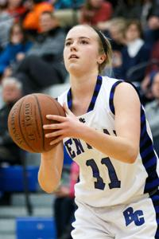
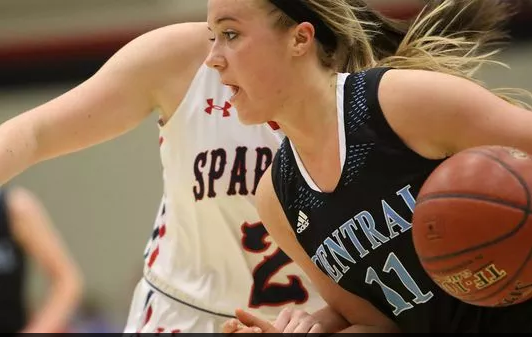

Caroline Busch cemented herself as one of best in Brookfield Central history

Brookfield Central has had many talented players come through its girls basketball program over the years.
But few, if any, have been better than Caroline Busch.
Busch cemented her stake among the best players in school history with a stellar senior season in which she became the program's all-time leading scorer and earned Now Newspapers All-Suburban honors for the third straight year.
She helped Brookfield Central overcome multiple early-season injuries to key players to finish 16-9 overall with her leadership off the court and performance on the court, averaging 15.8 points, 7.6 rebounds and 2.7 assists per game.
"As a player, Caroline has grown and improved every part of her game," Brookfield Central coach Mallory Liebl said. "She has always been a great shooter but over the years she worked hard to develop other aspects to become a more rounded player. One of the most impressive things about her is how she was a leader on and off the court.
"She's a player who didn't care about her own stats but cared about the team first and what she could do to help her teammates be better," Liebl said. "Caroline has made a huge impact on Brookfield Central girls basketball. She will be remembered as one of the best to play in our program."
When returning first-team All-Greater Metro forward Claire Haynes became the third Lancers player to suffer a serious injury when she suffered fractured transverse processes in her back during the second game of the season, opponents began to key even more on slowing Busch.

Busch averaged 15 points per game over the first 12 contests of the season, but the Lancers sat at just 5-7. As other scoring options in freshman Anna Mortag and senior Leah Swenson started to emerge, Brookfield Central began to turn its season around. Busch continued to play well, scoring 16.5 points per game in her final 13 outings, as the Lancers won 11 of 12 before their season ended with a sectional semifinal loss to Oak Creek.
"We definitely finished really strong," Busch said. "It didn't go exactly how we were hoping, just with all the injuries and everything, but overall this season everyone did a good job of stepping up and working hard and trusting each other. Because of that, we were able to make the best out of the situation we were given and end the season on a good note.
""Once Claire got hurt, that was our third main player that was now out for most of the season. At that point, as seniors we realized it was going to be a lot different than we were hoping. We knew we had to stick together, work hard every day and just trust the process to get through the situation."
Busch topped 1,000 career points in a 60-51 win over West Allis Hale on Jan. 6. She became the program's all-time leading scorer in a regional win over Milwaukee Reagan, passing the previous mark (1,219 points) set by Kelly Svetz in 1997.
In addition to becoming the school's all-time leading scorer with 1,260 points, Busch finished second all-time in rebounds with 631 (Julie Baughn had 637) and third in assists with 253, behind only Lydia Rohde (330) and Erin Lueder (298).
"That's a big deal to me," Busch said of becoming the all-time leading scorer in program history. "It means a lot to know that all my hard work, dedication and time spent playing basketball led to this. We've had a ton of amazing players go through Brookfield Central. To see my name at the top of that list is pretty cool."
Busch said she was surprised to learn she finished second all-time in rebounds.
"You look at some of the names up there and you see players a lot taller and bigger than me," she said.
Also a standout on the soccer field, Busch is not planning on playing collegiate athletics, as she is set to attend the University of Wisconsin in the fall.
Mortag (11.3 points, 5.8 rebounds) and Swenson (7.2 points) were honorable mention All-Suburban. Liebl received high honorable mention All-Suburban, as she guided the Lancers through adversity and a tough start to finish tied for second in the Greater Metro and reach the sectional semifinal.
"She's a great coach," Busch said of Liebl. "She really did a good job of keeping us stable at the beginning of the season when we realized things weren't going to go exactly how we were hoping. Every game and every practice, she was just always so calm. She always knows how we are feeling and what we need to do. She was a big reason for us finishing off the season how we did."
Caroline Busch was the Preps Plus Play of the Week in January.